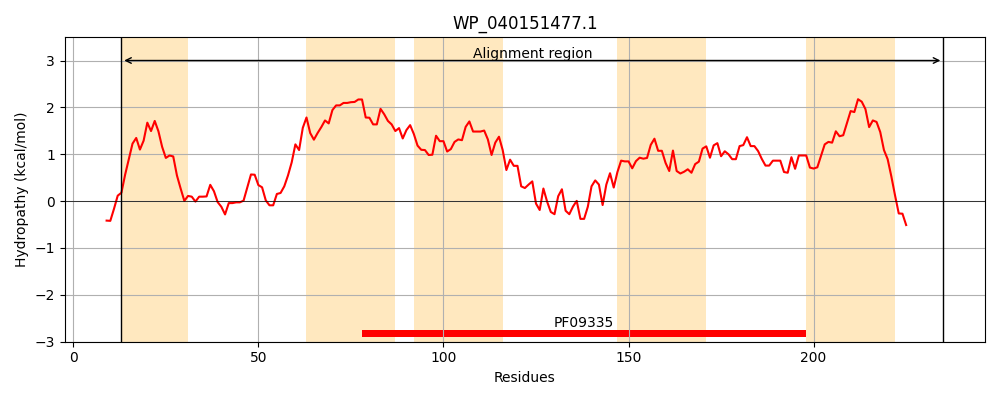
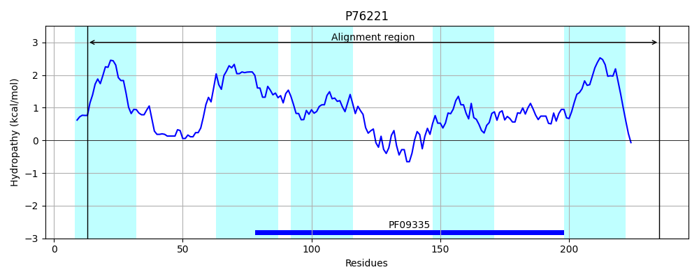
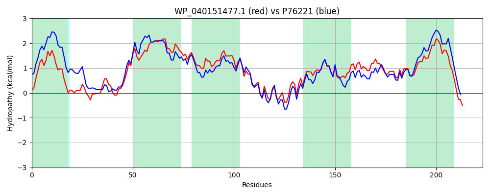

Hit Accession: P76221
Hit TCID: 9.B.27.1.2
Hit Description: gnl|BL_ORD_ID|11450 gnl|TC-DB|P76221|9.B.27.1.2 HYPOTHETICAL 26.2 KDA PROTEIN IN XTHA-GDHA INTERGENIC REGION - Escherichia coli.
Mach Len: 223
e:0.000000
Query TMS Count : 5
Hit TMS Count: 5
TMS-Overlap Score: 5.950000
Predicted Substrates:CHEBI:9090;selenite(2-)
BLAST Alignment:
Score: 763 , Bit scores: 298 bits, E-value: 2.7e-103, Alignment length: 223, Percentage identity: 66
Query: 13 RLALAVVAVAGLAAWWWFPGGRTFLQQSLTALASLDPQQVRGFIAAWGPQAALVSFALMILQAIVAPLPAFLITLANAALFGAFWGGALSWFSAMVGAGLCFCIARALGREVVEKLTGRAVLRSVDGYFTRFGPQTILVCRLLPFVPFDPVSYAAGLTSLRFWLFMLATGVGQLPATIVYSWAGSLLTGGTFWLATGLSLLFTLAVVISIAKNIYRERHKRSS 235
R+ L ++ A L AW PG F+ +S+ A A++D Q + FI ++G AA+VSF LMILQAI APLPAFLIT ANA+LFGAFWGG LSW S+M GA LCF IAR +GREVVEKLTG+ VL S+DG+FTR+G TILVCRLLPFVPFDP+SYAAGLTS+RF F +ATG+GQLPATIVYSWAGS+LTGGTFW TGL +LF L VVI +AK I+ ER KR++
Sbjct: 13 RITLIILLFAMLLAWALLPGVHEFINRSVAAFAAVDQQGIERFIQSYGALAAVVSFLLMILQAIAAPLPAFLITFANASLFGAFWGGLLSWTSSMAGAALCFFIARVMGREVVEKLTGKTVLDSMDGFFTRYGKHTILVCRLLPFVPFDPISYAAGLTSIRFRSFFIATGLGQLPATIVYSWAGSMLTGGTFWFVTGLFILFALTVVIFMAKKIWLERQKRNA 235 | Protein Hydropathy Plots: |
|---|
|  |  |
Pairwise Alignment-Hydropathy Plot:
|
|---|
|  |